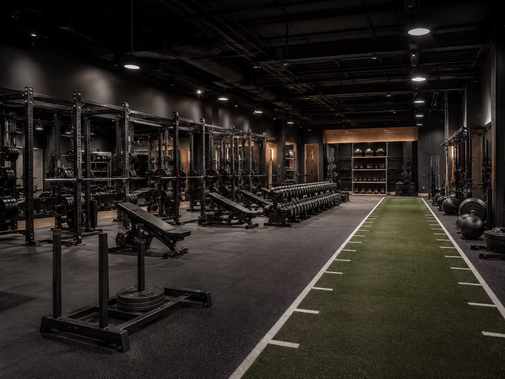
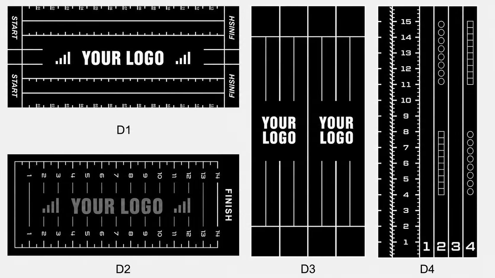
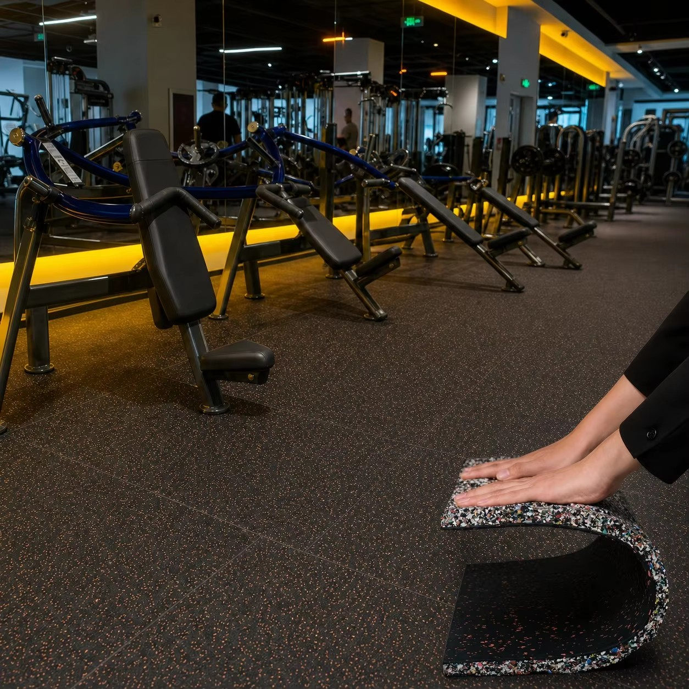
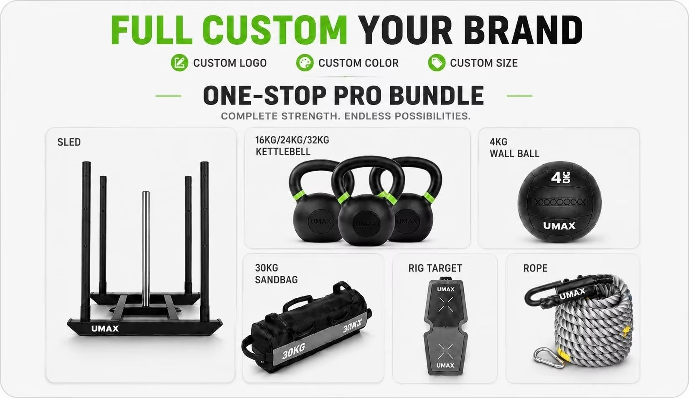
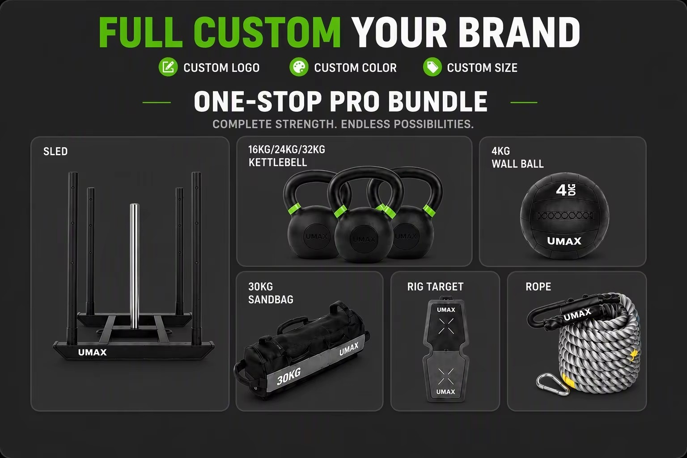

How Custom Gym Turf, Rubber Flooring and Functional Equipment Create a Better Hybrid Training Zone

A well-planned hybrid training zone combines movement lanes, impact-resistant flooring and equipment stations.Walk into a well-designed functional fitness space and the first thing you notice is not a single piece of equipment. It is how naturally the whole room works.
The sled lane has the right amount of resistance. The free-weight area feels stable under impact. Wall-ball, carry and conditioning stations are easy to understand. Members can move from one exercise to the next without crossing traffic or searching for equipment. Even the colors and lane markings help guide the session.
That experience does not come from buying products one at a time. It comes from planning the turf, flooring, equipment and branding as one connected training system.
For commercial gyms, boutique studios, distributors and sports facility projects, this system-based approach can reduce sourcing complexity while creating a training zone that looks more professional and performs better every day.
A Training Zone Should Begin with Movement, Not a Product List
Before comparing materials or equipment models, map the movements that will take place in the space.
Will athletes push and pull sleds? Do classes include sprints, lunges, wall balls or loaded carries? How many people need to train at the same time? Where will free weights be dropped? Which stations need storage nearby?
These questions reveal the real structure of the room. Most hybrid training zones need several clearly defined areas:
- A sled push and pull lane
- A sprint or warm-up strip
- A rubber-floored strength and free-weight section
- Wall-ball, sandbag and carry stations
- Cardio or conditioning equipment
- Storage and circulation space
Once the movement map is clear, it becomes much easier to specify the right surfaces and build a practical equipment list. The sled-track layout and measurement guide explains how to plan usable lane length, sled clearance, start and turn areas, storage and circulation as one operating footprint.
Start with Custom Gym Turf Where Movement Happens

Custom lane markings, numbers and logos turn gym turf into both a training surface and a branded feature.Turf is often the visual center of a modern training zone, but its value is functional first.
For sled work, the surface must provide consistent movement without becoming excessively sticky or wearing too quickly. For sprints and warm-ups, it needs to tolerate repeated foot traffic. For group training, the lane layout should be clear enough for coaches and members to use at a glance.
This is why purpose-built custom gym turf is a better starting point than general-purpose artificial grass. The material should be selected for indoor training, sled use and commercial traffic rather than lawn or landscaping applications.
UMAX offers custom turf with 15 mm, 20 mm and 25 mm pile options, custom dimensions, lane markings, colors and logo graphics. Available backing directions include 5 mm PU and PP+SBR options. The right specification depends on sled load, training frequency, subfloor condition and the feel the facility wants to create.
For many projects, the most useful question is not simply, "What turf is cheapest?" It is, "Which sled track turf will deliver repeatable resistance, hold its edges and support the way our members train?"
That question leads to a better long-term result.
Use Rubber Gym Flooring to Support High-Impact Areas

Commercial rubber flooring supports strength equipment and high-traffic areas while offering coordinated color options.Turf should not be forced to do every job.
Free-weight zones, strength stations, cardio areas and equipment corridors usually require a different surface. Commercial rubber gym flooring helps protect the subfloor, supports high-traffic use and creates a stable base for equipment.
The most effective layouts use turf and rubber together:
- Turf defines movement lanes and active training routes.
- Rubber supports racks, weights and high-impact stations.
- Color changes make the room easier to navigate.
- Clean transitions reduce clutter and improve the overall finish.
UMAX supplies commercial rubber flooring with roll options, custom project dimensions, available surface colors and speckle combinations, plus selected pattern directions. Palletized packing and container-loading support also make the material more practical for international projects and distributor programs.
Instead of choosing turf and flooring from unrelated catalogs, project teams can coordinate dimensions, colors and shipping requirements early. That reduces the chance of mismatched materials or last-minute layout changes.
Select Functional Training Equipment by Station

A station-based equipment package keeps the purchase focused on how members will actually train.A long equipment catalog can make a project feel more complicated than it is. A station-based plan keeps the purchase focused.
For example:
- Sled station: push sleds, pull sleds, ropes, straps, plates and lane markers
- Carry and strength station: kettlebells, farmers carry handles, dumbbells and power ropes
- Wall-ball and lunge station: wall balls, targets, rigs and adjustable sandbags
- Conditioning station: rowing machines, ski trainers, air bikes and curved treadmills
- Support station: storage racks, timers, displays, cones and markers
This approach helps buyers distinguish essential products from optional additions. It also makes it easier to build a commercial gym equipment package around the size of the room, expected class capacity and available budget.
UMAX's functional training equipment range can be combined with turf and flooring in one project. Selected models support logo application, color options and branded packaging, subject to product specifications and order requirements.
For distributors and private-label buyers, that creates a more coherent offer. For gym owners, it means fewer suppliers to coordinate and a clearer path from floor plan to finished station.
Make Branding Part of the Layout

Coordinated logos, colors and packaging help gyms and distributors create a repeatable branded product system.Branding works best when it improves the space instead of simply decorating it.
A logo at the start of a turf lane can create a strong visual focal point. Lane numbers and distance markers can support coaching. Coordinated rubber colors can distinguish strength, conditioning and warm-up zones. Branded labels and packaging can help distributors build a repeatable product line.
UMAX supports custom turf graphics, equipment logos, selected rubber flooring colors and private-label packaging. Buyers can send a logo, dimensions, color references and design direction to receive a visual mockup before production.
That preview stage is valuable because it allows the operator to check scale, placement and color balance before materials are made. It turns custom gym turf with logo from a vague idea into something the buyer can review with coaches, partners or end customers.
Why One-Stop Sourcing Matters
The biggest challenge in a hybrid training project is often not finding products. It is making sure every part of the order works together.
When turf, flooring and equipment come from separate suppliers, the buyer must coordinate specifications, production schedules, packing methods and freight across several conversations. Small inconsistencies can become expensive once the shipment reaches the site.
A one-stop sourcing model simplifies that process. UMAX can help buyers plan a recommended mix, confirm specifications, coordinate custom branding, prepare export packing and arrange sea, air, FOB, CIF or DDP shipping options. Selected standard products can start with flexible quantities, while custom items are confirmed according to the model and project.
For international buyers, combining product categories may also make shipment planning more efficient. More importantly, one project contact can see the whole training zone rather than one isolated product.
What to Prepare Before Requesting a Quote
A useful project brief does not need to be complicated. Prepare the following information before speaking with a gym equipment supplier:
- Facility floor plan or basic length and width measurements
- Intended use of each training area
- Number and dimensions of turf lanes
- Expected class size or daily traffic
- Required equipment stations
- Logo file and preferred brand colors
- Destination country and delivery address
- Target opening or installation date
- Preferred shipping term, if already known
For a custom turf mockup, AI, SVG or high-resolution PNG logo files are especially helpful. Reference images and Pantone color codes can further reduce revision time.
Build the Zone Around the Experience You Want to Deliver
The best hybrid training spaces are not the ones with the most equipment. They are the ones where surfaces, stations and movement patterns feel intentional.
Custom gym turf creates a clear path for sled work, sprinting and branded training. Rubber gym flooring gives strength and high-impact areas the stable foundation they need. A station-based functional equipment package supports coaching, class flow and future growth. Coordinated branding brings the whole room together.
UMAX Sports helps international B2B buyers source these elements as one project, with customization, mockup support, export-ready packing and global shipping options.
Planning a commercial gym, boutique studio, distributor range or sports facility? Send UMAX your floor plan, destination and target opening date to receive a recommended product mix and quotation. You can also contact the team via WhatsApp at +86 183 5833 8643 or email zoey@umaxsporting.com.
Frequently Asked Questions
What pile height should I choose for sled track turf?
The best pile height depends on sled load, training frequency, subfloor and the resistance your facility wants. UMAX offers 15 mm, 20 mm and 25 mm options; confirm the final specification against your project requirements.
Can I add my gym logo and lane markings to the turf?
Yes. UMAX supports custom logos, lane markings, numbers, text and colors. A visual mockup is prepared after the dimensions and design direction are confirmed.
Can turf, rubber flooring and equipment ship together?
UMAX can coordinate multiple product categories within one project and confirm the practical packing and shipping plan for the destination and order mix.
What information is needed for a quotation?
Send your facility dimensions or floor plan, product list, branding requirements, destination country and target delivery date. These details help the team recommend specifications and prepare an accurate quote.